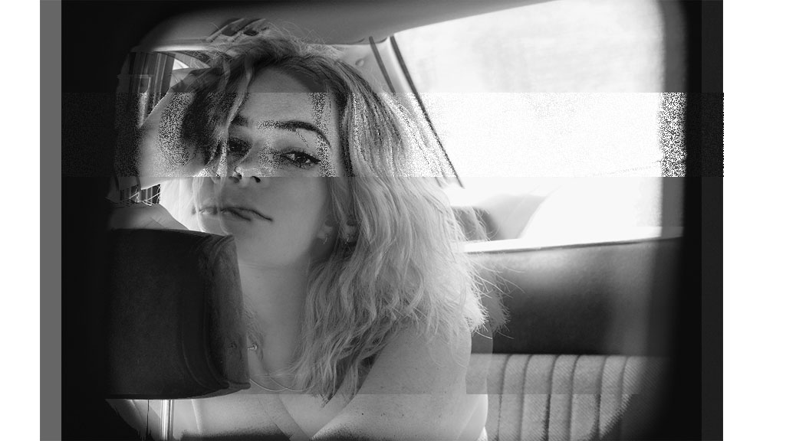

Julian Fee's Art 101 Homepage.
This page is dedicated to Art 101, Winter 2021.
A little bit about me:
Hey friends, my name is Julian (she/her/hers) some call me Jules. I am a fourth year Film and Digital Media Major with a concentration in production. I am originally from Nashville, TN but I spent most o my lie in Missoula, MT. I am currently living and loving Santa Cruz! Some of my interests include photography, swimming, skiing, and making friends with every animal I come across. I look forward to continuing my HTML, CSS, and Java knowledge through the Art101 course.
Art101 Labs:
- Lab 2: Your First HTML
- Lab 3: File Structure and File Tranfer
- Lab 4: Pseudocoding and Problem-Solving
- Lab 5: Data Types and Variables
- Lab 6: Arrays and Objects
- Lab 7: Functions
- Lab 8: Anon Functions and Callbacks
- Lab 9: Javascipt for the Web
- Lab 10: Javascipt Events and Forms
- Lab 11: Libraries & jQuery
- Lab 12: Conditionals
- Lab 13: Loops
- Lab 14: Debugging
- Section 1/21: Experimental Lab